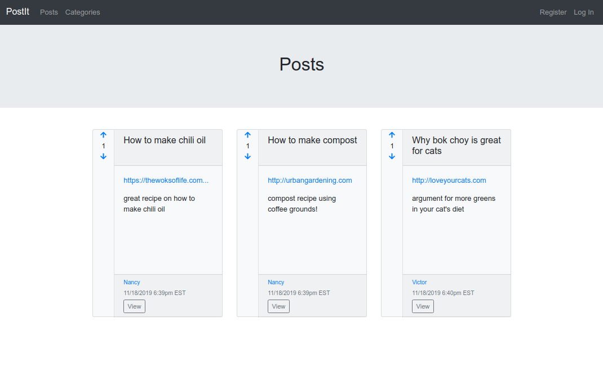

Nancy Trinh

I recently co-created Venice, an open-source framework for deploying and managing stream processing pipelines.
Venice's default pipeline consists of Apache Kafka brokers, Zookeeper, Zookeeper, Confluent Schema Registry, Kafka Connect, ksqlDB, PostgreSQL server, and Kafdrop.
READ THE CASE STUDYProjects
-

Postit
A blogging app that allows users to authenticate, create posts, comment on posts, add categories, vote on posts, and edit profile information. Built with Rails 6, Ruby 2.6.5, and Bootstrap 4.
-

Trello Clone
A Trello-like app built with a React and Redux front-end and Ruby on Rails backend.
-
Simulated spaceship landings using reinforcement learning
A reinforcement agent that learns to safely land a simulated spaceship (OpenAI LunarLander-v2) using an approach adapted from Mnih et. al. Human-level control through deep reinforcement learning, Nature 518, 2015.
-
Image recognition of road signs and traffic lights
A machine learning model that detects road signs and traffic lights from the German Traffic Sign Detection Benchmark. Achieved performance comparable with state-of-the-art classification techniques.